산업위생관리기사 (2004-03-07 기출문제)
1과목: 산업위생학개론
1. 국민 영양 권장량을 결정하는데 있어서 영양기준 설정 개념과 가장 거리가 먼 것은?
- 소요량
- 지적량
- 충분량
- 작업량
(정답률: 10%)

2. Flicker 검사를 가장 바르게 설명한 것은?
- 산업피로 판정을 위한 심리학적 검사법으로서 전신 자각증상을 조사하는 것이다.
- 산업피로 판정을 위한 생리심리적 검사법으로서 인지(認知)역치를 검사하는 것이다.
- 산업피로 판정을 위한 생화학적 검사법으로서 근력 수준을 검사하는 것이다.
- 산업피로 판정을 위한 심리학적 검사법으로서 Ebbinghaus 촉각계를 사용하여 변별(弁別)역치를 조사하는 것이다.
(정답률: 알수없음)
3. 작업강도에 관한 설명으로 부적합한 것은?
- 작업강도는 일반적으로 열량소비량을 기준으로 한다.
- 같은 작업을 하는 경우라도 작업자의 성별,체격 등에 따라 열량소비량이 달라진다.
- 작업대사량은 작업강도를 작업에 소요되는 열량의 측면에서 보는 한 지표에 지나지 않는다.
- 손가락만을 올리는 작업이라도 일정한 속도이상으로 빨리 움직여 일할때는 피로가 심하게 되며 또한 작업 대사량도 커진다.
(정답률: 알수없음)
4. 산업피로(Industrial fatigue)에 대한 설명으로 가장 거리가 먼 것은 ?
- 육체적 정신적 그리고 신경적인 노동부하에 반응하는 생체의 태도이다.
- 산업피로는 건강장해에 대한 경고반응이라 말할 수 있다.
- 산업피로는 생산성의 저하뿐만 아니라 재해와 질병의 원인이 된다.
- 산업피로는 원천적으로 일종의 질병이며 비가역적 생체변화이다.
(정답률: 알수없음)
5. 인간공학에 관한 설명으로 알맞지 않은 것은?
- 기업에 있어서 인간공학의 역할은 생산에 있어 인간과 기계관계를 합리화 시키는데 있다.
- 인간공학이 중요시되는 이유는 생산경쟁이 격심해짐에 따라 생산성을 증대시키고자 하기 때문이다.
- 인간공학에서 고려해야 할 인간의 특성은 민족, 작업환경, 집단에 대한 적응능력 등이다.
- 인간공학은 공장의 기계설치시 준비단계, 선택단계 활용단계별로 나누어 고려되어 진다.
(정답률: 알수없음)
6. 작업대사율(RMR)이 4인 경우에 지속가능한 작업시간으로 가장 적절한 것은?
- 15분
- 25분
- 30분
- 60분
(정답률: 알수없음)
7. 강도율을 나타내는 식은?
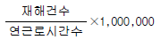
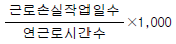
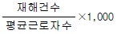
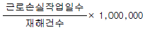
(정답률: 알수없음)
8. 요통발생에 관여하는 요인을 바르게 설명한 것은?
- 물체와 몸의 거리가 멀 경우 지렛대의 역할을 하는 L2/S2 디스크에 많은 부담을 주게 된다
- 일반적으로 요통은 장기간 반복하여 무리한 동작을 할 때 보다 한번의 과격한 충격에 의하여 발생하는 경우가 많다
- 버스 운전기사, 이발사, 미용사, 타이피스트 등의 직업인에게서 요통이 많이 발생하는 것은 부적절한 자세에 기인한다
- 연령이 높아짐에 따라 디스크장해를 유발하는 압력도 증가한다
(정답률: 알수없음)
9. 젊은 근로자의 약한 손(오른손 잡이인 경우 왼손)의 힘이 평균 45kp라고 한다. 이러한 근로자가 무게 7kg인 상자를 두손으로 들어올릴 경우 작업강도는?
- 31.2%
- 15.2%
- 7.8%
- 3.9%
(정답률: 54%)
10. 다음 중 피로의 증상으로 틀린 것은?
- 혈압은 초기에 높아지고 피로가 진행되면 도리어 낮아진다.
- 소변의 양이 줄고 단백질 또는 교질물질의 배설이 감소한다.
- 체온이 높아지나 피로정도가 심해지면 도리어 낮아진다.
- 혈액의 혈당치가 낮아진다.
(정답률: 알수없음)
11. 1802년 산업위생의 원리를 적용한 최초의 법률로 인정받는 '도제 건강 및 도덕법'제정의 주도적 역할을 한 사람은?
- Robert Peel
- Percivall Pott
- Alice Hamilton
- Ulrich Ellenbog
(정답률: 알수없음)
12. 다음 중 작업대사율(relative metabolic rate, RMR)을 올바르게 표현한 것은?
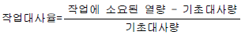
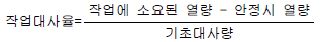
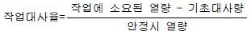
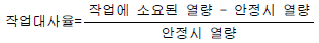
(정답률: 알수없음)
13. 중량물 취급작업시 NIOSH에서 제시하고 있는 최대허용 기준(MPL)에 대한 설명으로 틀린 것은?(단, AL은 감시기준)
- MPL은 3AL에 해당되는 값으로 정신물리학적 연구결과, 남성근로자의 25%미만과 여성근로자의 1%미만에서만 MPL 수준의 작업을 수행할 수 있었다.
- 노동생리학적 연구결과, MPL에 해당되는 작업이 요구하는 에너지 대사량은 5kcal/min를 초과하였다.
- 인간공학적 연구결과 MPL에 해당되는 작업은 디스크에 3400N의 압력이 부과되어 대부분의 근로자들이 이 압력에 견딜 수 없었다.
- 역학조사 결과 MPL을 초과하는 작업에서는 대부분의 근로자들에게 근육, 골격 장애가 나타났다.
(정답률: 알수없음)
14. 산업재해를 분류할 때 상해 없이 재산피해만 발생하는 것을 무엇이라고 하는가?
- 주요사고 혹은 재해 (major accidents)
- 경미사고 혹은 재해 (minor accidents)
- 유사사고 혹은 재해 (near-accidents)
- 가(假)사고 혹은 재해(pseudo-accidents)
(정답률: 알수없음)
15. 우리나라 산업위생역사에서 중요한 원진레이온 공장에서의 집단적인 직업병 유발물질은 무엇인가?
- 이황화탄소(CS2)
- 벤젠(Benzene)
- 수은
- 디클로로메탄
(정답률: 90%)
16. 우리나라 산업위생 분야의 발전에 큰 영향 가져온 제도로 작업환경측정기관의 분석능력 향상에 중요한 역할을 한 것은?
- 기준실험 인정제도
- 측정도 인증제도
- 정도관리제도
- PAT Program
(정답률: 알수없음)
17. 미국산업안전보건연구원(NIOSH)의 중량물 취급작업 기준에서 적용하고 있는 들어올리는 물체의 폭은 얼마이하 인가?
- 55 cm 이하
- 65 cm 이하
- 75 cm 이하
- 85 cm 이하
(정답률: 알수없음)
18. 분진발생공정에서 측정한 호흡성분진의 농도가 각각 2.5, 2.8, 3.1, 2.6 ㎎/m3인 경우 기하평균 농도(㎎/m3)는?
- 2.62
- 2.68
- 2.74
- 2.79
(정답률: 67%)
19. 바람직한 교대제와 근무관리에 대한 설명이 잘못된 것은?
- 야근근무는 2 - 3일 이상 연속하지 않는 것이 좋다.
- 야근 교대시간은 상오 0시 이전에 하는 것이 좋다.
- 근무시간의 간격은 15 - 16시간 이상으로 하는 것이 좋다.
- 야근시 가면은 작업 피로도에 따라 30분에서 1시간 범위내에서 실시하는 것이 좋다.
(정답률: 알수없음)
20. 산업재해를 대비하여 작업근로자가 취해야 할 내용과 가장 거리가 먼 것은?
- 사업장 내부의 정리정돈
- 공정과 설비에 대한 검토
- 보호구 착용
- 작업방법의 숙지
(정답률: 알수없음)
2과목: 작업위생측정 및 평가
21. 분석에 이용되는 공시료와 통계적으로 다르게 분석될 수 있는 가장 낮은 농도로 분석기기가 검출할 수 있는 가장 작은 양을 무엇이라고 하는가?
- 정량한계
- 검출한계
- 정성한계
- 정도한계
(정답률: 알수없음)
22. 작업장에서 생화학적 측정치나 유해물질의 농도를 평가할때 일반적으로 사용되는 평균치는 ?
- 기하평균치
- 산술평균치
- 최빈치
- 중앙치
(정답률: 40%)
23. 습구온도를 측정하기 위한 측정기기와 측정시간의 기준을 알맞게 나타낸 것은 ?
- 자연습구온도계 - 15분 이상
- 자연습구온도계 - 20분 이상
- 아스만통풍건습계 - 5분 이상
- 아스만통풍건습계 - 25분 이상
(정답률: 알수없음)
24. 분광광도계를 이용하여 미지시료에 대한 농도를 측정하고자 한다(암모니아, ppm). 표준검량곡선이 y=0.2x + 0.01이며, 미지시료의 흡광도가 0.15이다. 이때 미지시료의 농도는?
- 0.04 ppm
- 0.⑤ ppm
- 0.5 ppm
- 0.7 ppm
(정답률: 알수없음)
25. 석탄먼지, 결정형 유리규산, 무정형 유리규산, 별도로 분리하지 않은 먼지등을 대상으로 무게농도를 구하고자 할 때 채취에 필요한 여과지는 ?
- PVC
- 유리섬유여과지
- MCE
- PTFE
(정답률: 알수없음)
26. 유리섬유 여과지 한개를 사용하여 8시간동안 카르바릴을 채취하였다. 측정된 공기중 카르바릴의 농도는 6mg/m3였고 공기중 카르바릴의 PEL은 5.0mg/m3이고 SAE는 0.23이였다면 근로자의 노출농도가 허용기준을 초과하는지 여부를 가장 알맞게 나타낸 것은 ?
- 측정치는 허용기준 이하이다.
- 측정치는 허용기준을 초과한다.
- 측정치는 허용기준을 초과할 가능성이 있다.
- 측정치는 허용기준을 초과할 가능성이 없다.
(정답률: 알수없음)
27. 근로자가 일정시간동안 일정농도의 유해물질에 노출되고 있을 때 체내에 흡수되는 유해물질의 양은 다음식에 의해서 계산된다. [ 체내흡수량(mg) = ( ) x 노출시간 x 폐환기율 x체내 잔류율 ]. 다음중 ( )에 들어갈 내용으로 적합한 것은?
- 공기중 유해물질 농도
- 체내 흡수농도
- 체내 허용농도
- 체내 혈중농도
(정답률: 알수없음)
28. 실내공간이 50m3인 빈실험실에 MEK(methyl ethyl ketone)2㎖가 기화되어 완전히 혼합되었다고 가정하면 이때 실내의 MEK농도는 몇 ppm인가? (단, MEK 비중= 0.8⑤, 분자량=72.1, 25℃, 1기압기준)
- 5.1
- 10.9
- 32.2
- 40.2
(정답률: 알수없음)
29. 어느 작업장의 소음의 측정 결과는 다음과 같았다. 이때의 총음압수준은 ?[ A기계:95㏈(A), B기계:90㏈(A), C기계:88㏈(A)]
- 약 91㏈(A)
- 약 94㏈(A)
- 약 97㏈(A)
- 약 99㏈(A)
(정답률: 알수없음)
30. 용량분석 중 침전적정법에 속하지 않는 것은 ?
- Mohr method
- Chelate method
- Volhard method
- Fajans method
(정답률: 0%)
31. 작업장의 음압수준이 95dB(A) 이고, 근로자의 귀마개의 차음평가수(NRR=13)를 착용하고 있다. 차음효과로 근로자가 실제 노출되는 음압수준은? (단, 미국 OSHA의 계산방법 기준)
- 82 dB(A)
- 85 dB(A)
- 88 dB(A)
- 92 dB(A)
(정답률: 알수없음)
32. 크실렌을 측정하여 분석한결과 5ppm이 검출되었다. 크실렌의 SAE(시료채취 및 분석오차)는 0.12, 노출기준이 100ppm일 때 표준화값(Y)와 신뢰상한값(UCL:95% 신뢰도)이 맞게 짝지어진 것은?
- Y = 0.⑤, UCL = 0.17
- Y = 0.⑤, UCL= -0.07
- Y = 20, UCL = 20.12
- Y = 20, UCL = 19.88
(정답률: 알수없음)
33. 공기중 석면시료분석에 가장 정확한 분석기구이나 값이 비싸고 분석시간이 많이 소요되는 것은?
- 직독계수분석법
- X-선 회절분석법
- 위상차 현미경법
- 전자현미경법
(정답률: 알수없음)
34. 우리나라 작업환경측정 및 정도관리규정상의 측정방법 중시료채취근로자수 선정에 관한 설명으로 알맞는 것은?
- 동일작업 근로자수가 100인을 초과할 때는 최대 시료채취 근로자수를 10인으로 조정할 수 있다.
- 동일작업 근로자수가 100인을 초과할 때는 최대 시료채취 근로자수를 20인으로 조정할 수 있다.
- 동일작업 근로자수가 100인을 초과할 때는 최대 시료채취 근로자수를 10인으로 조정하여야 한다.
- 동일작업 근로자수가 100인을 초과할 때는 최대 시료채취 근로자수를 20인으로 조정하여야 한다.
(정답률: 알수없음)
35. 용접작업 중 발생되는 용접흄을 측정하기 위해 사용할 여과지를 화학천칭을 이용해 무게를 재었더니 70.11mg이었다. 이 여과지를 이용하여 1.5ℓ /min의 시료채취유량으로 360분간 측정을 실시한 후 잰 무게는 75.88mg이었다면 용접흄의 농도는?
- 약 5.8mg/m3
- 약 8.5mg/m3
- 약 10.7mg/m3
- 약 13.6mg/m3
(정답률: 알수없음)
36. 유도결합프라즈마(ICP)에 관한 설명으로 알맞지 않는 것은 ?
- 적은양의 시료를 가지고 한꺼번에 많은 금속을 분석할 수 있다는 것이 가장 큰 장점이다.
- 사용방법이 복잡하고 넓은 농도범위에서 직선성 확보가 어려운 단점은 있으나 분석의 정확도가 높다.
- 전형적인 장치구성은 시료주입시스템,플라즈마 토오치,라디오주파수 발생기,파장분리기,검출기, 그리고 컴퓨터자료처리장치이다.
- 가장 일반적으로 시료를 플라즈마로 보내는 방법은 액체 에어로졸을 직접 주입하는 분무기에 의한 것이다.
(정답률: 알수없음)
37. 50% 톨루엔 (T oluene, T LV = 375㎎/m3), 10% 벤젠(Benz ene, T LV = 30㎎/m3), 40% 노르말핵산(n-Hex ane, T LV = 180㎎/m3)의 유기용제가 혼합된 원료를 사용할 때, 작업장 공기중의 허용농도는? (단, 유기용제간 상호작용은 없음)
- 129 ㎎/m3
- 145 ㎎/m3
- 195 ㎎/m3
- 263 ㎎/m3
(정답률: 알수없음)
38. 다음은 T.C.E 세척작업을 수행하는 근로자에 대한 개인폭로 농도를 측정한 결과 아래표와 같다. 오후에는 T.C.E 세척작업을 하지않는 타부서에서 근무하였다면 T.C.E에 대한 8시간 TWA 농도는 얼마인가?(단, 일일근무시간 : 08:00-12:00, 13:00-17:00)
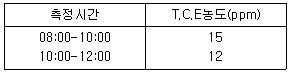
- 6.75 ppm
- 7.15 ppm
- 7.45 ppm
- 8.15 ppm
(정답률: 알수없음)
39. 세척공정에서 발생되는 유기용제를 측정한 결과 아세톤, 메틸에틸케톤,톨루엔이 검출되었다. 혼합물의 노출계수(Em)를 계산한 결과 0.96이었고, 혼합물을 포함하는 물질의 시료분석 포집오차(RSt)를 구하였더니 0.115였다. 혼합물의 노출기준은?
- 0.845
- 1.075
- 1.115
- 1.232
(정답률: 알수없음)
40. 소음 단위인 데시벨(㏈)을 계산하기 위한 최소음압실효치가 P0 =0.00002N/m2 이며, 측정한 음압이 0.63N/m2 라면이 음압수준은?
- 45㏈
- 55㏈
- 90㏈
- 110㏈
(정답률: 알수없음)
3과목: 작업환경관리대책
41. 공기공급시스템이 필요한 이유가 아닌 것은?
- 국소배기장치의 원활한 작동을 위해서
- 안전사고를 예방하기 위해서
- 연료를 절약하기 위해서
- 작업장의 교차기류를 발생시키기 위해서
(정답률: 알수없음)
42. 풍량 120m3/min, 송풍기 유효전압 100㎜H2O, 송풍기의 효율이 0.75인 송풍기의 소요동력은?
- 2.2kW
- 2.6kW
- 3.4kW
- 3.8kW
(정답률: 알수없음)
43. 사무실 직원이 모두 퇴근한 직후인 오후 5시 20분에 측정한 공기 중 이산화탄소 농도는 1200ppm, 사무실이 빈상태로 2시간이 경과한 오후 7시 20분에 측정한 이산화탄소 농도는 400ppm이었다. 이 사무실의 시간당 공기교환 횟수는? (단, 외부공기 중의 이산화탄소의 농도는 330ppm 임)
- 3.26
- 2.26
- 1.26
- 0.26
(정답률: 알수없음)
44. 폭 320㎜,깊이 760㎜의 곧은 각관 내를 Q = 280m3/분의 표준공기가 흐르고 있을 때 레이놀드수(Re)값은? (단, 동점성계수는 1.5 × 10-5 m2/sec 이다 )
- 5.76× 105
- 6.76× 105
- 7.76× 105
- 8.76× 105
(정답률: 알수없음)
45. 어느 작업장에서 Methylene chloride( 비중량 = 1.336, 분자량 = 84.94, TLV = 500ppm)를 시간당 5리터(5ℓ /hr)를 사용할 때 필요한 희석환기량(m3/min)은? (단, 안전계수는 5, 실내온도는 20℃이다.)
- 약 220
- 약 320
- 약 420
- 약 520
(정답률: 알수없음)
46. 풍압이 2.5㎝H2O 일 때 송풍기의 회전속도가 180 RPM이다 만약 회전속도가 360 RPM으로 확대 되었다면 풍압은?
- 약 5.0㎝H2O
- 약 7.5㎝H2O
- 약 10.0㎝H2O
- 약 12.5㎝H2O
(정답률: 22%)
47. 밀어당김형 후드(push-pull hood)에 대한 설명중 적합치 아니한 것은?
- 공정에서 작업물체를 처리조에 넣거나 꺼내는 중에 공기막이 파괴되어 오염물질이 발생할 수 있다.
- 노즐전체면적은 기류분포를 고르게 하기 위해서 노즐 충만실 단면적의 10%를 넘지 않도록 해야 한다.
- 도금조와 같이 폭이 넓은 경우에 사용하면 포집효율을 증가시키면서 필요유량을 감소시킬 수 있는 장점이 있다.
- 노즐의 각도는 제트공기가 방해받지 않도록 하향방향을 향하고 최대 20° 내를 유지하도록 한다.
(정답률: 알수없음)
48. 공기정화장치의 한 종류인 원심력집진기에서 절단입경(cut-size, Dpc)은 무엇을 의미하는가?
- 100% 분리 포집되는 입자의 최소입경
- 100% 처리효율로 제거되는 입자크기
- 50% 처리효율로 제거되는 입자크기
- 50% 집진효율을 나타내는 것
(정답률: 67%)
49. 덕트 설치시 고려사항으로 틀린 것은?
- 가급적 원형덕트를 사용하며 부득이 사각형 덕트를 사용할 경우는 가능한 한 정방형을 사용한다
- 직경이 다른 덕트를 연결할 때는 경사 30° 이내의 테이퍼를 부착한다
- 송풍기를 연결할 때에는 최소 덕트 직경의 30배 정도는 직선구간으로 하여야 한다
- 수분이 응축될 경우 덕트 내로 들어가지 않도록 하며 경사나 배수구를 마련한다
(정답률: 알수없음)
50. 원형 닥트내에 유체가 난류로 흐르고 있을 때 유체 유량은 변함이 없고 닥트의 내경만 2배로 되면 직관 부분의 압력손실은 얼마로 감소하는가?
- 1/4배
- 1/8배
- 1/16배
- 1/32배
(정답률: 알수없음)
51. 안전모의 사용방법과 보관방법에 대한 설명으로 적절치 못한 것은?
- 통풍의 목적으로 모체에 구멍을 뚫어서는 안된다
- 착장체는 최소한 1개월에 한 번 60℃의 물에 비누나 세척제로 세탁해야 한다
- 플라스틱제는 열화되므로, 열경화성 수지는 약 3년, 열가소성 수지는 약 5년이 지나면 폐기처분한다
- 안전모를 차에 싣고 다닐 때는 햇빛이 비치는 창 밑에 두어서는 안된다
(정답률: 알수없음)
52. 21℃ 기체를 취급하는 어떤 송풍기의 풍량이 20m3/min이다. 동일한 송풍기가 동일한 회전수로 50℃인 기체를 취급한다면 이때 풍량은 얼마인가?
- 10m3/min
- 15m3/min
- 20m3/min
- 25m3/min
(정답률: 알수없음)
53. 전체환기를 사용해서는 곤란한 경우는?
- 유해물질의 독성이 비교적 낮은 경우
- 유해물질의 발생원이 한 군데 집중된 경우
- 유해물질이 시간에 따라 균일하게 발생될 경우
- 오염물질의 발생양이 적은 경우
(정답률: 50%)
54. 조용한 대기 중에 실제로 거의 속도가 없는 상태로 가스,증기, 흄이 발생할 때 국소환기에 필요한 제어속도범위로 적절한 것은?
- 0.25 - 0.5m/sec
- 0.1 - 0.25m/sec
- 0.⑤ - 0.1m/sec
- 0.01 - 0.⑤m/sec
(정답률: 70%)
55. 원심력송풍기 중 전향 날개형 송풍기에 관한 설명으로 틀린 것은?
- 송풍기의 임펠러가 다람쥐 쳇바퀴 모양으로 회전날개가 회전방향과 동일한 방향으로 설계되어 있다
- 동일 송풍량을 발생시키기 위한 임펠러 회전속도가 상대적으로 높아 소음이 큰 단점이 있다
- 강도문제가 그리 중요하지 않기 때문에 저가로 제작이 가능하다
- 높은 압력손실에서는 송풍량이 급격하게 떨어지므로 전체환기나 공기 조화용으로 널리 사용된다
(정답률: 알수없음)
56. 방음 보호구의 설명 중 옳은 것은?
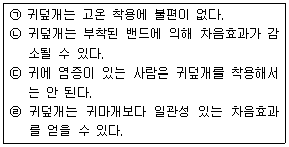
- ㉠ ㉡
- ㉡ ㉢
- ㉡ ㉣
- ㉠ ㉢
(정답률: 80%)
57. 덕트 합류시 균형유지 방법 중 설계에 의한 정압균형 유지법의 단점이 아닌 것은?
- 설계시 잘못된 유량을 고치기가 어려움
- 설계가 복잡하고 시간이 걸림
- 최대 저항경로 선정이 잘못되어도 설계시 발견하기 어려움
- 때에 따라 전체 필요한 최소유량보다 더 초과될 수 있음
(정답률: 알수없음)
58. 호스마스크의 종류를 송기법(送氣法)에 따라 구분한 것으로 알맞지 않는 것은?
- 송풍마스크
- 압축공기식마스크
- 흡입작용식마스크
- 통기마스크
(정답률: 알수없음)
59. 작업환경의 관리방법 중 공정의 변경에 의한 대치 방법과 가장 거리가 먼 것은?
- 알코올을 사용한 엔진 개발
- 금속을 두들겨 자르던 공정을 톱으로 절단
- 가연성 물질을 철제통에 저장
- 전기 흡착식 페인트 분무방식 사용
(정답률: 알수없음)
60. 후드의 정압이 20㎜H2O이고 속도압이 12㎜H2O일 때 유입계 수 Ce는?
- 0.95
- 0.80
- 0.77
- 0.62
(정답률: 알수없음)
4과목: 물리적유해인자관리
61. X-선과 동일한 특성을 가지는 전자파 전리방사선으로 원자의 핵에서 발생되고 깊은 투과성 때문에 외부노출에 의한 문제점이 지적되고 있는 것은 ?
- 알파(α)선
- 베타(β)선
- 감마(γ)선
- 중성자
(정답률: 알수없음)
62. 자장에 관한 설명으로 적합하지 않는 것은?
- 자장은 자석상호간, 전류상호간 또는 자석과 전류간의 힘이 작용하는 장을 말한다.
- 자장의 강도는 자속밀도와 자화의 강도로 구한다.
- 산업장의 환경에서 직류자장으로는 발전기,변압기, 유도가열장치등이 있다.
- 자장측정장치 중 일반 작업환경 측정용으로는 Gausmeter,Electronic 자속계가 쓰인다.
(정답률: 알수없음)
63. 다음의 그림과 같이 소음원이 작업장의 모서리에 놓여 있을 때 지향계수(directivity factor) Q는?
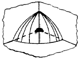
- 1
- 2
- 4
- 8
(정답률: 알수없음)
64. 진동수에 따른 등청감곡선에서 나타나는 것 중 옳은 것은 ?
- 수평진동은 1 - 2㎐ 범위에서 가장 민감하다.
- 수평진동은 2 - 4㎐ 범위에서 가장 민감하다.
- 수평진동은 4 - 8㎐ 범위에서 가장 민감하다.
- 수평진동은 8 - 16㎐ 범위에서 가장 민감하다.
(정답률: 10%)
65. 상온의 범위로 가장 알맞는 것은 ?
- 0 - 15℃
- 15 - 25℃
- 1 - 35℃
- 25 - 35℃
(정답률: 알수없음)
66. 형광방전등에 관한 설명으로 알맞지 않은 것은 ?
- 주로 자외선을 방사하는 방전관의 관벽에 적당한 조성비의 형광물질을 칠한 것으로 대부분은 백색에 가까운 빛을 얻는 광원으로 사용된다.
- 백열전구나 수은등 보다 효율이 높다.
- 백열전구에 비하여 수명이 길며 전원의 전압이 일정하지 않아도 조도세기에 영향이 없고 보조기구가 필요없다.
- 방전으로 방사되는 에너지의 60% 내외는 수은의 공명선이며 전 입력의 20%가 형광으로서 방출된다.
(정답률: 0%)
67. 1루멘(Lumen)의 빛이 1m2의 평면에 비칠때의 밝기를 무엇이라 하는가 ?
- 촉광(candle)
- Lambert
- 룩스(Lux)
- 후트캔들(Foot candle)
(정답률: 알수없음)
68. 질소 마취작용이 나타나는 기압기준은?
- 2기압 이상
- 3기압 이상
- 4기압 이상
- 5기압 이상
(정답률: 50%)
69. 아래의 설명 중에서 조명의 정도를 높여야 하는 경우와 가장 거리가 먼 것은?
- 취급물체와 주위의 색깔의 대조가 뚜렷하지 않을 때
- 밝은 색깔을 취급할 때와 같이 피사체의 반사율이 커져 음영이 발생될 때
- 계속적으로 눈을 쓰고 정밀작업을 할 때
- 생산성 향상을 위해 물체를 정확하고 빠르게 보는 것이 필요할 때
(정답률: 알수없음)
70. 다음 중 제2도 동상의 증상으로 적절한 것은?
- 따갑고 가려운 감각이 생긴다.
- 수포를 가진 광범위한 삼출성 염증이 생긴다.
- 심부조직까지 동결하면 조직의 괴사와 괴저가 일어난다.
- 혈관이 확장하여 발적이 생긴다.
(정답률: 알수없음)
71. 저압환경에 폭로되었을 때 나타나는 증상과 거리가 먼 것은 ?
- 항공치통
- 폐수종
- 급성고산병
- 산소중독
(정답률: 알수없음)
72. 온열조건에 있어 온열지수(WBGT)를 평가하는데 고려되어야 할 사항 중 가장 관계가 적은 것은?
- 건구온도
- 기류
- 습구온도
- 복사열
(정답률: 알수없음)
73. 감압병의 증상등에 관한 설명으로 틀린 것은?
- 동특성 관절장애(Bends)는 감압증에서 흔히 나타나는 급성장애이다
- 질소의 기포가 뼈의 소동맥을 막아서 비감염성 골괴사를 일으키기도 한다.
- 마비는 감압증에서 주로 나타나는 중증 합병증이다.
- 극도의 우울증, 식욕상실 등의 임상 증세를 보이며 가장 특징적인 것은 흥분성이다.
(정답률: 60%)
74. 마이크로파의 생체작용과 가장 거리가 먼 것은?
- 열작용
- 중추신경에 대한 작용
- 피부 및 내장조직 변형 작용
- 혈액의 변화
(정답률: 알수없음)
75. 고온작업에 있어서 1차적 반응의 생리적 영향을 설명한 것은 ?
- 교감신경에 의한 피부 혈관의 확장이 일어난다.
- 모세혈관으로부터 삼출액이 발생되어 조직의 부종이 유발된다.
- 수분재흡수를 증가시켜 뇨 배설량이 감소한다.
- 위장관 계통의 혈류량감소로 소화기능이 감퇴된다.
(정답률: 82%)
76. 감압에 따르는 조직내 질소기포형성량에 영향을 주는 요인인 조직에 용해된 가스량을 결정하는 인자로 가장 알맞는 것은?
- 기온
- 체내 지방량
- 감압속도
- 폐내의 이산화탄소 농도
(정답률: 알수없음)
77. 고열환경의 인체장애 현상인 열중증의 종류에 따른 원인과 증상의 연결이 잘못된 것은?
- 열경련 - 염분소실 - 복부와 사지 근육의 강직,동통
- 열사병 - 체온상승 - 체온조절중추기능장애
- 열피로 - 탈수로 혈장량 감소 - 실신, 허탈
- 열쇠약 - 급격한 체력소모 - 고열, 발작
(정답률: 알수없음)
78. [ 일반적으로 ( )의 마이크로파는 신체에 흡수되어도 감지되지 않는다 ] ( )안에 알맞는 내용은?
- 150MHz 이하
- 300MHz 이하
- 500MHz 이하
- 1000MHz 이하
(정답률: 알수없음)
79. 적외선의 생체작용에 관한 설명으로 잘못된 내용은?
- 적외선이 조직에 흡수되면 화학반응을 일으켜 조직의 온도가 상승한다.
- 적외선이 신체에 조사되면 일부는 피부에서 반사되고 나머지는 조직에 흡수된다.
- 조직에서의 흡수는 수분함량에 따라 다르다.
- 조사부위의 온도가 오르면 혈관이 확장되어 혈액량이 증가되며 심하면 홍반을 유발하기도 한다.
(정답률: 50%)
80. 1 Rad(흡수선량단위)에 해당되는 것은?
- 100 ergs/gram
- 0.1 curies
- 1000 rems
- 1 reps
(정답률: 42%)
5과목: 산업독성학
81. 다음 분진중에서 악성 중피종(mesothelioma)을 유발시키는 것은 ?
- 석면
- 유리규산
- 활석
- 유리섬유
(정답률: 알수없음)
82. 은빛 광택을 내는 비금속으로서 가열하면 녹지 않고 승화되며 피부 특히 겨드랑이나 국부 등에 습진형 피부염이 생기며 피부암이 유발되는 물질은?
- 알루미늄
- 크롬
- 베릴륨
- 비소
(정답률: 알수없음)
83. 화학적 발암작용 기전인 체세포 변이원설의 증거로 틀린것은?
- 암이란 세포에서 다음 세대의 세포로, 즉 세포차원에서 유전된다
- 발암물질들은 그 자체로서 혹은 대사됨으로써 DNA와 공유결합을 형성한다
- 암세포는 여러개의 분지계로 부터 유래된다
- 전부는 아니지만 대부분의 암은 염색체 이상을 나타낸다
(정답률: 알수없음)
84. 암의 발생원인 중 그 기여도가 가장 낮은 것은?
- 노화
- 만성감염
- 환경오염
- 부적절한 음식섭취
(정답률: 알수없음)
85. 동물실험을 통하여 산출한 독물량의 한계치(NOED ; No -Observable Effect Dose)을 사람에게 적용하기 위하여 인간의 안전 폭로량(SHD)을 계산할때 무엇을 기준으로 외삽(extrapolation)하는가 ?
- 체중
- 축적도
- 평균수명
- 감응도
(정답률: 23%)
86. 상기도 점막 자극성 물질과 가장 거리가 먼 것은?
- 암모니아
- 아황산가스
- 알데히드
- 포스겐
(정답률: 알수없음)
87. 유해화학물질에 의한 간의 중요한 장해인 중심소엽성괴사를 일으키는 물질 중 대표적인 것은 것은?
- 에킬렌글리콜
- 사염화탄소
- 이황화탄소
- 수은
(정답률: 알수없음)
88. 급성중독의 특징으로 심한 신장장해로 과뇨증이 오며 더 진전되면 무뇨증을 일으켜 요독증으로 10일안에 사망에 이르게 하는 물질은?
- 베릴륨
- 크롬
- 벤젠
- 비소
(정답률: 알수없음)
89. 당해 화학물질의 독성을 결정하기 위한 만성폭로시험과 가장 거리가 먼 내용은 ?
- 생식영향과 산아장해를 시험한다.
- 눈과 피부에 대한 자극성을 시험한다.
- 상승작용과 가승작용 및 상쇄작용에 대하여 시험한다
- 거동특성을 시험한다.
(정답률: 알수없음)
90. 체내에서의 중금속 수송 및 해독에 저분자 단백질인metallothionein이 관여하는 중금속 물질은 ?
- 납
- 수은
- 크롬
- 카드뮴
(정답률: 알수없음)
91. 다음의 진폐증 중에서 흡인분진의 종류가 다른 것은 ?
- 규폐증
- 연초폐증
- 활석폐증
- 탄소폐증
(정답률: 알수없음)
92. 카드뮴에 의해 인체내 폭로되었을때 체내의 주된 축적 기관은?
- 간,신장,장관벽
- 심장,뇌,비장
- 뼈,피부,근육
- 혈액,신경,모발
(정답률: 알수없음)
93. 방향족 탄화수소 중 급성 전신중독을 유발하는데 독성이 가장 강한 물질은?
- 벤젠
- 크실렌
- 톨루엔
- 스타이렌
(정답률: 40%)
94. 신경계통 중 중추신경계에 작용하여 파킨슨 증후군을 유발하는 유해물질로 가장 적절한 것은? (단. 생물학적 폭로지표로는 iodine-azide검사 이용)
- 스타이렌
- 이황화탄소
- 수은
- 납
(정답률: 50%)
95. 다음은 화학적 상호작용의 독성을 수치로 표현한 것이다. 잘못된 것은?
- additive action: 2 + 3 → 5
- synergism: 2 + 3 → 20
- potentiation: 2 + 0 → 2
- antagonism: 4 + 6 → 8
(정답률: 알수없음)
96. 수은 중독에 관한 설명 중 틀린 항목은?
- 알킬수은화합물의 독성은 무기수은화합물의 독성보다 훨씬 강하다.
- 전리된 수은이온이 단백질을 침전시키고 thiol기 (SH)를 가진 효소작용을 억제한다.
- 주된 증상은 구내염,근육진전,정신증상으로 구분한다
- 급성중독인 경우의 치료는 10% EDTA를 투여한다.
(정답률: 알수없음)
97. 비교원성진폐증에 관한 설명으로 틀린 것은?
- 비교원성 간질반응이 명백하고 정도가 심하다.
- 망상섬유로 구성되어 있다.
- 분진에 의한 조직반응은 가역성인 경우가 많다.
- 용접공폐증, 주석폐증, 바륨폐증, 칼륨폐증을 말한다
(정답률: 28%)
98. [( )의 원인이 되는 유기성 분진은 체내반응 보다는 직접적인 알레르기 반응을 일으키며 특히 호열성 방선균 류의 과민증상이 많다.] ( )에 알맞은 것은 ?
- 규폐증
- 석면폐증
- 면폐증
- 농부폐증
(정답률: 73%)
99. 다핵방향족 화합물(PAH)에 대한 설명으로 틀린 것은?
- PAH는 벤젠고리가 2개 이상 연결된 것으로 20여 가지 이상이 있다
- PAH의 대사에 관여하는 효소는 시토크롬 P-448으로 대사되는 중간산물이 발암성을 나타낸다
- 톨루엔, 크릴렌등이 대표적이라 할 수 있다
- PAH는 배설을 쉽게 하기 위하여 수용성으로 대사된다
(정답률: 알수없음)
100. 향기로운 방향이 있는 무색액체로서 백혈병을 유발하는 것으로 확증된 물질은?
- 톨루엔
- 벤젠
- 시클로핵산
- 크실렌
(정답률: 34%)